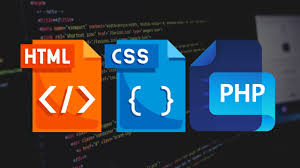

A História do JavaScript
JavaScript é uma das linguagens de programação mais populares no desenvolvimento web. Criado por Brendan Eich em 1995, ele revolucionou o mundo da web...
Relacionamento com HTML, CSS e PHP
JavaScript é comumente utilizado junto com HTML e CSS para criar interfaces dinâmicas e interativas. Enquanto o HTML é responsável pela estrutura...
